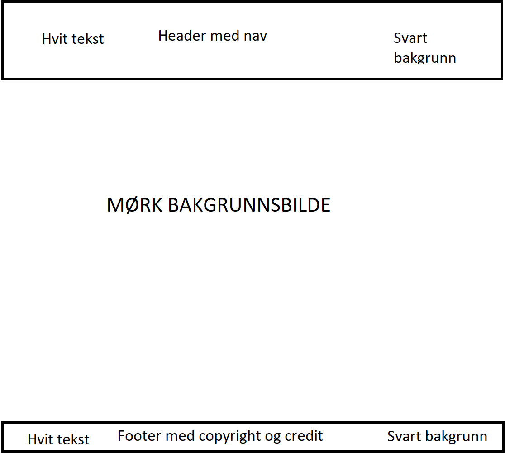
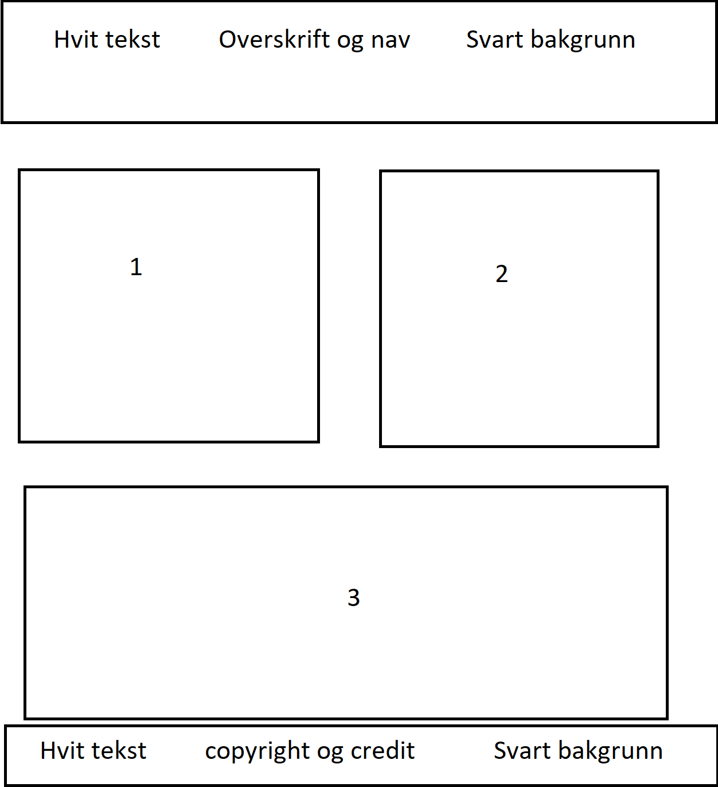

Forside mal
Artikkel mal
Hvorfor er malen som den er?
Forsiden min inneholder en header, body, main og en footer. Inni headeren ligger tittelen som er navnet mitt, og en nav. Inni headeren finner du en hjemknapp, artikkel 1(Oppgave4.1), artikkel 2(Oppgave4.2), og artikkel 3(Oppgave6). Her kan du lett finne fram til de forskjellige artikklene samtidig som du lett kan gå tilbake.
I artikkelen har jeg valgt og lage ulike boxer til ulike artikkler. Dette har jeg gjort, slik at det skal være lett og skille mellom hva tekst om tilhører hvilken artikkel. Føler det er greit og gjøre det slikt siden, siden ser ryddig ut.
Tabell
| URL: | Beskrivelse: |
|---|---|
| www.dittgrafisk.no | Denne nettsiden syntes jeg var ryddig og fin. Min header har jeg fått ideer fra denne nettsiden. Nettsiden hadde en veldig fin forside med fin header med navigasjon. |
| www.w3schools.com | Denne siden finner man mange eksempler og fine koder til forskjellige ting. Jeg har f.eks. brukt w3schools når jeg lagde tabellen. |